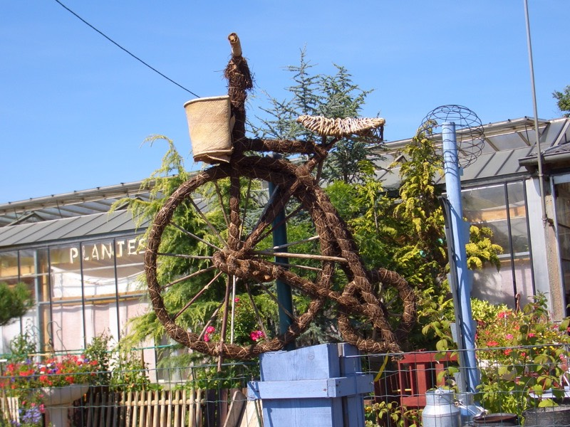
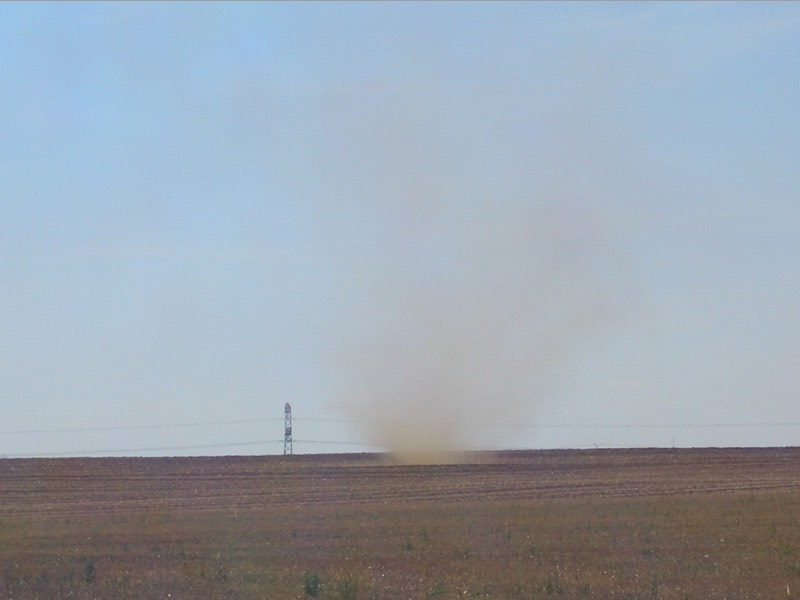

昨天喝的有點小多，可惜不會講法語，不然能在小酒吧能別人聊上兩句吐吐苦水感覺應該不錯。
幸好早上起床沒有宿醉的情形，沖個冷水澡，外頭的天氣，好的有些過了頭，豔陽天∼
十點左右離開這個半路經過的城鎮，繼續往尼奧爾方向移動。
早餐在麵包店買了一個有點像是肉鬆麵包的形狀，但裡頭是香濃的奶油跟一些巧克力。
還有一條超長法國麵包，外酥內軟真是便宜又好吃呀∼這樣共花1.55歐元。
先沿著昨天的路走D938，然後轉D744，一路上好多好多的向日葵田。
多到令人不敢相信，是純粹種好玩的嗎？一口氣種那∼∼麼多，滿山遍野都是。
向日葵除了可以做葵花油之外，還有什麼特殊的經濟效益所以才種這麼多嗎？
路上不曉得為什麼，搞得整條路像是縫縫補補的破布一樣。
向日葵的花都相當一致的朝著東方，但下午太陽在西邊，所以變成背日葵。
而且每一朵花都頭低低的，像是被太陽晒的受不了一樣，又變成了向地葵。
不光是花被晒的受不了，我都快要被曬成烤焦麵包了 /_\....
真的是好大好大的太陽∼下雨不好、晴天也難熬，還是陰涼天最適合騎車了。

田裡頭熱到連小龍捲風都出現了∼

三點半的時候就到達尼爾奧了，由於前幾天公休，所以要趕點進度。
稍作休息之後，繼續往南騎，騎車不是多辛苦的事情，問題是太陽真的有點大呀∼
下午四點，被太陽晒的七昏八素，由於前幾天沒有水分的補給，覺得這樣騎車蠻危險的。
因為有些麵包店也不給人裝水，感覺有些小家子氣，路上的水龍頭又很難找。
加油站，十間有一間附設廁所就要放鞭炮感到高興了！
為了怕沒水騎車可能會有脫水的危機，所以除了本來那個600CC的寶特瓶之外。
又拿了一個1.5公升的可口可樂寶特瓶來當水壺，這樣雖然保險很多，但FCR1又要負重了。
加起來，超過兩公升的水，下午四點也消耗完了，猛灌水還是渴到不行。
到加油站補給糧食，買了1.5歐元的餅乾還有1.5歐元的大瓶柳橙汁。
柳橙汁很好喝，又很大罐，但沒幾下子也全部喝完了∼@@"
今天一整天，都沒有找個可以用的網路，有點失望 =..= 浪費了好多時間在城市裡晃來晃去。
在大太陽下騎車，要是能有樹陰可以乘涼一下的話，真是再棒不過了∼
發現不明農作物
別再晒了，再晒就要烤焦了∼∼疑？想不到真的焦了。
自走澆水裝置，大概有五百公尺長，可以自動灑水＆移動，神奇的機械農業。
下午走N11->D1->D151-?D120->D939->N150 一路往桑特騎去。
看著路標牌還有26公里才會到，那今天里程就要超過自訂的150公里上限了。
今天多騎這二十公里，明天可能會累的騎不了車，均勻的分配里程是很重要的。
下午七點二十分，看到價格可以接受的旅館，28歐元一晚上。
看看里程表，149.5公里，那就是這裡了，住下吧 :) 餐廳附設的旅館，還可以享受美食∼
入住之後，馬上就掛出了『旅館客滿』的牌子，原來我是最後一位房客了∼
FCR1停在老闆自家的院子裡。
房間相當的西曬，已經被曬了一天的我，連到旅館都還要繼續曬....都快成人乾了
拉起窗簾，趁好天氣把所有的衣服都洗起來，老天爺打包票保證明天一定會乾。
老闆說晚餐從八點開始供應（他就是主廚唷），我就傻傻的從八點開始到樓下等。
一邊等一邊寫今天的遊記，結果等到九點了，菜才上桌 /_\ 餓扁啦。
今天吃15歐元的套餐：
前菜：法國麵包＆生菜沙拉+四種口味的肉凍。原本以為腥味會很重，但吃起來也還好，口感不錯∼
主菜：鴨腿（應該是先炸過再滷過之類的，蠻台灣風味，鴨腿相當肥美，很軟且入口即化）
那一團配菜類的東西，我只看得出有小黃瓜、青椒、橄欖、南瓜、桃子，其他還有很多不明物。
甜點：起司（兩種口味的起司，但是不甜的東西能稱為甜點嗎？雖然如此，配法國麵包倒是挺好吃！）
吃完起司，和總計四籃的法國麵包，相當滿意的準備要離開時。
真．甜點，這時候才登場，噹噹∼蘋果派！（每一口都是蘋果的香味）
飽餐後再來一杯現煮的咖啡∼快意似神仙 *^^*
今天提早休息，明天要長騎到葡萄酒的故鄉，波爾多，希望這趟路別超過200公里 /_\